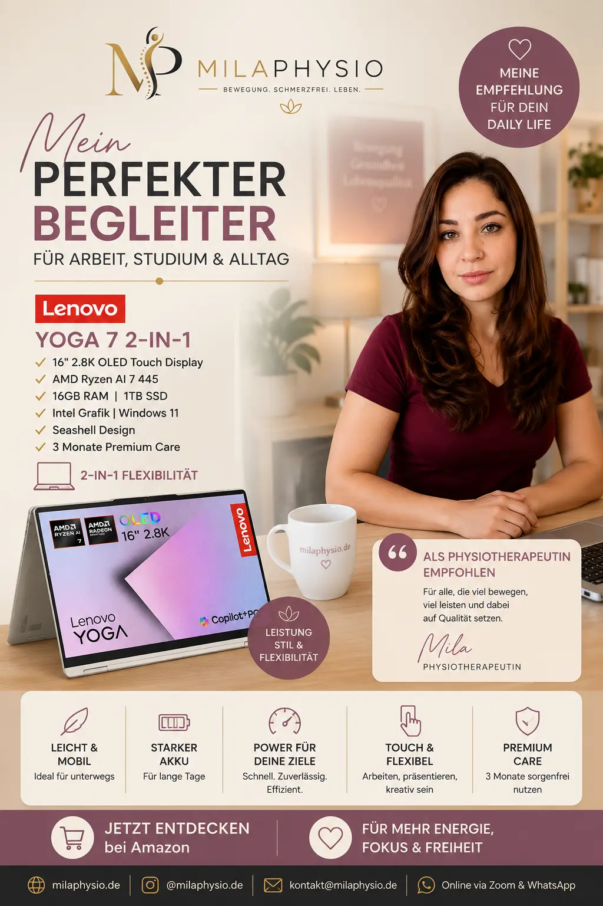

Lenovo Yoga 7 2-in-1
Ein flexibles 2-in-1 Notebook für Homeoffice, digitales Arbeiten, Studium und kreative Aufgaben.
Bei Amazon kaufenWarum empfehle ich dieses Notebook?
Als Physiotherapeutin, die auch digital arbeitet, ist ein guter Arbeitsplatz für mich besonders wichtig. Ein Notebook ist dabei nicht nur ein technisches Werkzeug, sondern Teil des täglichen Arbeitsplatzes.
Das Lenovo Yoga 7 2-in-1 finde ich interessant, weil es flexibel eingesetzt werden kann. Je nach Aufgabe kann es klassisch als Notebook oder im Tablet-Modus verwendet werden.
Gerade für Homeoffice, Online-Termine, Content Creation, Weiterbildung und digitales Marketing kann diese Flexibilität praktisch sein.
Wichtig aus ergonomischer Sicht: Auch ein sehr gutes Notebook macht einen Arbeitsplatz nicht automatisch ergonomisch. Bildschirmhöhe, Sitzposition, externe Tastatur und Maus spielen bei längerer Arbeit eine wichtige Rolle.
Für wen kann das Lenovo Yoga 7 interessant sein?
Das Gerät kann besonders für Menschen interessant sein, die flexibel arbeiten und unterschiedliche digitale Aufgaben miteinander verbinden möchten.
Homeoffice
Geeignet für alltägliche digitale Aufgaben, Videokonferenzen und Arbeiten von zu Hause.
Online-Arbeit
Praktisch für Online-Termine, Videokonferenzen und digitale Kommunikation.
Content Creation
Interessant für die Erstellung von Texten, Präsentationen und digitalen Inhalten.
Studium & Weiterbildung
Praktisch für Lernen, Recherche und digitale Weiterbildungen.
2-in-1 Nutzung
Notebook und Tablet in einem Gerät bieten zusätzliche Flexibilität.
Mobiles Arbeiten
Durch das flexible Format kann das Gerät für unterschiedliche Arbeitssituationen genutzt werden.
Mein ergonomischer Tipp
Wenn Sie mehrere Stunden am Laptop arbeiten, würde ich das Gerät möglichst nicht dauerhaft direkt auf dem Tisch verwenden.
Der Bildschirm befindet sich bei einem Notebook normalerweise relativ niedrig. Dadurch kann der Kopf über längere Zeit nach vorne geneigt werden.
Eine einfache Lösung ist ein Laptopständer oder ein erhöhter Bildschirm in Kombination mit einer externen Tastatur und Maus.
Für einen besseren Arbeitsplatz
- Bildschirm möglichst auf Augenhöhe
- Externe Tastatur verwenden
- Externe Maus verwenden
- Schultern entspannt halten
- Regelmäßig die Sitzposition wechseln
Was ich vermeiden würde
- Stundenlang mit gesenktem Kopf arbeiten
- Laptop dauerhaft auf dem Schoß
- Nur eine einzige Sitzposition über mehrere Stunden
- Langes Arbeiten ohne Bewegungspausen
Vorteile und mögliche Grenzen
Vorteile
- Flexibles 2-in-1 Konzept
- Touchscreen
- Für Homeoffice geeignet
- Vielseitig für digitales Arbeiten
- Praktisch für Studium und Weiterbildung
Mögliche Grenzen
- Ein Laptop ersetzt keinen ergonomischen Arbeitsplatz.
- Für lange Arbeitstage kann ein externer Monitor sinnvoll sein.
- Tastatur und Maus können bei längerer Nutzung ergonomisch sinnvoll sein.
Warum ich ein 2-in-1 Gerät praktisch finde
Besonders praktisch finde ich die Möglichkeit, zwischen klassischem Laptop-Modus und Tablet-Modus zu wechseln.
Für Schreiben, Organisation und längere Arbeiten nutze ich persönlich lieber eine klassische Notebook-Position mit Tastatur.
Für Präsentationen, Lesen oder bestimmte kreative Aufgaben kann die flexible Positionierung dagegen sehr praktisch sein.
Für Menschen, die beruflich und privat viele unterschiedliche digitale Aufgaben erledigen, kann ein solches Gerät deshalb eine interessante Lösung sein.
Mein Fazit
Das Lenovo Yoga 7 2-in-1 ist für mich vor allem wegen seiner Vielseitigkeit interessant.
Für Homeoffice, Online-Arbeit, Weiterbildung, Content Creation und digitales Marketing kann ein leistungsfähiges und flexibles Notebook den Arbeitsalltag deutlich erleichtern.
Aus physiotherapeutischer Sicht bleibt aber der wichtigste Punkt: Nicht nur das Gerät entscheidet über einen ergonomischen Arbeitsplatz. Die gesamte Arbeitsumgebung und regelmäßige Bewegungspausen sind genauso wichtig.
Hinweis: Diese Seite enthält Affiliate-Links. Wenn Sie über einen solchen Link einkaufen, kann ich eine Provision erhalten. Für Sie entstehen dadurch keine zusätzlichen Kosten. Meine Empfehlungen basieren auf meiner persönlichen Einschätzung und ersetzen keine individuelle medizinische Beratung.